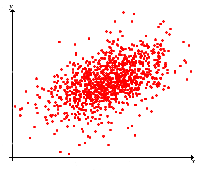

Ingat kembali model dasar statistika: kita memiliki populasi objek yang menjadi perhatian dan berbagai pengukuran (variabel) yang dilakukan terhadap objek-objek tersebut. Kita memilih objek dari populasi dan mencatat variabel untuk objek-objek dalam sampel; catatan ini menjadi data kita. Pembahasan pertama menggunakan sudut pandang yang murni deskriptif. Artinya, kita tidak mengasumsikan bahwa data dihasilkan oleh suatu distribusi probabilitas yang mendasarinya. Namun, seperti biasa, ingat bahwa data itu sendiri mendefinisikan suatu distribusi probabilitas, yaitu distribusi empiris yang memberikan probabilitas sama kepada setiap titik data.
Misalkan \(x\) dan \(y\) adalah variabel bernilai riil pada suatu populasi, dan \(\left((x_1, y_1), (x_2, y_2), \ldots, (x_n, y_n)\right)\) adalah sampel teramati berukuran \(n\) dari \((x, y)\). Kita akan menggunakan \(\bs{x} = (x_1, x_2, \ldots, x_n)\) untuk menyatakan sampel dari \(x\), dan \(\bs{y} = (y_1, y_2, \ldots, y_n)\) untuk menyatakan sampel dari \(y\). Pada bagian ini, kita tertarik pada statistik yang menjadi ukuran asosiasi antara \(\bs{x}\) dan \(\bs{y}\), serta pada pencarian garis (atau kurva lain) yang paling sesuai dengan data.
Ingat bahwa rata-rata sampel adalah \[ m(\bs{x}) = \frac{1}{n} \sum_{i=1}^n x_i, \quad m(\bs{y}) = \frac{1}{n} \sum_{i=1}^n y_i \] dan varians sampel adalah \[ s^2(\bs{x}) = \frac{1}{n - 1} \sum_{i=1}^n [x_i - m(\bs{x})]^2, \quad s^2(\bs{y}) = \frac{1}{n - 1} \sum_{i=1}^n [y_i - m(\bs{y})]^2 \]
Sering kali, langkah pertama dalam analisis data eksploratif ialah menggambar titik-titik data; gambar ini disebut diagram pencar dan dapat memberikan gambaran visual tentang hubungan statistik antara variabel-variabel tersebut.

Secara khusus, kita ingin mengetahui apakah kumpulan titik tampak menunjukkan kecenderungan linear atau apakah suatu kurva nonlinear mungkin lebih sesuai dengan kumpulan titik tersebut. Kita tertarik pada sejauh mana satu variabel \(x\) dapat digunakan untuk memprediksi variabel lainnya \(y\).
Tujuan kita berikutnya ialah mendefinisikan statistik yang mengukur asosiasi antara data \(x\) dan \(y\).
Untuk ukuran sampel sedikitnya dua, kovarians sampel didefinisikan sebagai \[ s(\bs{x}, \bs{y}) = \frac{1}{n - 1} \sum_{i=1}^n [x_i - m(\bs{x})][y_i - m(\bs{y})] \] Dengan mengasumsikan bahwa vektor data tidak konstan sehingga simpangan bakunya positif, korelasi sampel didefinisikan sebagai \[ r(\bs{x}, \bs{y}) = \frac{s(\bs{x}, \bs{y})}{s(\bs{x}) s(\bs{y})} \]
Perhatikan bahwa kovarians sampel merupakan rata-rata hasil kali simpangan data \(x\) dan \(y\) dari rata-ratanya. Karena itu, satuan fisik kovarians sampel adalah hasil kali satuan \( x \) dan \( y \). Korelasi adalah bentuk kovarians yang telah dibakukan. Secara khusus, korelasi tidak berdimensi (tidak memiliki satuan fisik), sebab kovarians pada pembilang dan hasil kali simpangan baku pada penyebut memiliki satuan yang sama (yaitu hasil kali satuan \(x\) dan \(y\)). Perhatikan pula bahwa kovarians dan korelasi memiliki tanda yang sama: positif, negatif, atau nol. Pada kasus pertama, data \(\bs{x}\) dan \(\bs{y}\) dikatakan berkorelasi positif; pada kasus kedua, \(\bs{x}\) dan \(\bs{y}\) dikatakan berkorelasi negatif; dan pada kasus ketiga, \(\bs{x}\) dan \(\bs{y}\) dikatakan tidak berkorelasi.
Untuk melihat bahwa kovarians sampel merupakan ukuran asosiasi, ingat terlebih dahulu bahwa titik \(\left(m(\bs{x}), m(\bs{y})\right)\) merupakan ukuran pusat data bivariat. Bahkan, jika setiap titik adalah lokasi suatu massa satuan, maka \(\left(m(\bs{x}), m(\bs{y})\right)\) adalah pusat massa sebagaimana didefinisikan dalam fisika. Garis horizontal dan vertikal yang melalui titik pusat ini membagi bidang menjadi empat kuadran. Hasil kali simpangan \([x_i - m(\bs{x})][y_i - m(\bs{y})]\) bernilai positif di kuadran pertama dan ketiga, serta negatif di kuadran kedua dan keempat. Setelah mempelajari regresi linear di , kita akan memahami dengan jauh lebih mendalam apa yang diukur oleh kovarians.
Anda mungkin bertanya-tanya mengapa kita merata-ratakan hasil kali simpangan dengan membagi oleh \(n - 1\), bukan \(n\). Penjelasan utamanya ialah bahwa dalam model probabilitas di , pilihan ini membuat kovarians sampel menjadi penaksir takbias bagi kovarians distribusi. Pemilihan pembagi ini juga dapat dipahami secara tepat melalui derajat kebebasan, seperti pada varians sampel. Kedua vektor data mula-mula memiliki \(2 n\) koordinat. Pemusatan dengan rata-rata \(m(\bs{x})\) dan \(m(\bs{y})\) mengenakan satu kendala jumlah-nol pada setiap vektor, sehingga pasangan vektor berpusat memiliki \(2 n - 2\) derajat kebebasan. Setiap vektor berpusat berada dalam subruang berdimensi \(n - 1\), dan kovarians adalah hasil kali dalam kedua vektor tersebut yang dinormalisasi dengan \(n - 1\); tidak ada pengurangan derajat kebebasan tambahan ketika hasil kali komponennya dihitung. Namun, dari sudut pandang yang murni deskriptif, membagi oleh \(n\) juga masuk akal.
Ingat bahwa terdapat distribusi probabilitas alami yang berkaitan dengan data, yaitu distribusi empiris yang memberikan probabilitas \(\frac{1}{n}\) kepada setiap titik data \((x_i, y_i)\). (Jadi, jika titik-titik ini berbeda, distribusi tersebut adalah distribusi seragam diskret pada data.) Rata-rata sampel tidak lain adalah nilai harapan distribusi bivariat ini, dan kecuali suatu faktor konstan (pembagian oleh \(n - 1\), bukan \(n\)), varians sampel tidak lain adalah varians distribusi bivariat ini. Demikian pula, kecuali suatu faktor konstan (sekali lagi pembagian oleh \(n - 1\), bukan \(n\)), kovarians sampel adalah kovarians distribusi bivariat dan korelasi sampel adalah korelasi distribusi bivariat. Semua hasil berikut dalam pembahasan statistika deskriptif sebenarnya merupakan kasus khusus dari hasil yang lebih umum untuk distribusi probabilitas.
Beberapa latihan berikut menetapkan sejumlah sifat penting kovarians sampel. Seperti biasa, simbol tebal menyatakan sampel berukuran tetap \(n\) dari variabel populasi yang bersesuaian (yaitu vektor dengan panjang \(n\)), sedangkan simbol dengan huruf biasa menyatakan bilangan riil. Hasil pertama adalah rumus kovarians sampel yang kadang-kadang lebih baik daripada definisinya untuk keperluan komputasi. Agar hasilnya dapat dinyatakan secara ringkas, misalkan \(\bs{x} \bs{y} = (x_1 \, y_1, x_2 \, y_2, \ldots, x_n \, y_n)\) menyatakan sampel dari variabel hasil kali \(x y\).
Kovarians sampel dapat dihitung sebagai berikut: \[ s(\bs{x}, \bs{y}) = \frac{1}{n - 1} \sum_{i=1}^n x_i \, y_i - \frac{n}{n - 1} m(\bs{x}) m(\bs{y}) = \frac{n}{n - 1} [m(\bs{x}\bs{y}) - m(\bs{x}) m(\bs{y})] \]
Perhatikan bahwa \begin{align} \sum_{i=1}^n [x_i - m(\bs{x})][y_i - m(\bs{y})] & = \sum_{i=1}^n [x_i y_i - x_i m(\bs{y}) - y_i m(\bs{x}) + m(\bs{x}) m(\bs{y})] \\ & = \sum_{i=1}^n x_i y_i - m(\bs{y}) \sum_{i=1}^n x_i - m(\bs{x}) \sum_{i=1}^n y_i + n m(\bs{x}) m(\bs{y}) \\ & = \sum_{i=1}^n x_i y_i - n m(\bs{y}) m(\bs{x}) - n m(\bs{x}) m(\bs{y}) + n m(\bs{x})m(\bs{y}) \\ & = \sum_{i=1}^n x_i y_i - n m(\bs{x}) m(\bs{y}) \end{align}
Teorema berikut memberikan rumus lain untuk kovarians sampel, yang tidak memerlukan perhitungan statistik perantara.
Kovarians sampel dapat dihitung sebagai berikut: \[ s(\bs{x}, \bs{y}) = \frac{1}{2 n (n - 1)} \sum_{i=1}^n \sum_{j=1}^n (x_i - x_j)(y_i - y_j) \]
Perhatikan bahwa \begin{align} \sum_{i=1}^n \sum_{j=1}^n (x_i - x_j)(y_i - y_j) & = \sum_{i=1}^n \sum_{j=1}^n [x_i - m(\bs{x}) + m(\bs{x}) - x_j][y_i - m(\bs{y}) + m(\bs{y}) - y_j] \\ & = \sum_{i=1}^n \sum_{j=1}^n \left([x_i - m(\bs{x})][y_i - m(\bs{y})] + [x_i - m(\bs{x})][m(\bs{y}) - y_j] + [m(\bs{x}) - x_j][y_i - m(\bs{y})] + [m(\bs{x}) - x_j][m(\bs{y}) - y_j]\right) \end{align} Kita menghitung jumlah-jumlah tersebut suku demi suku. Jumlah pertama adalah \[n \sum_{i=1}^n [x_i - m(\bs{x})][y_i - m(\bs{y})]\] Dua jumlah berikutnya bernilai 0. Jumlah terakhir adalah \[n \sum_{j=1}^n [m(\bs{x}) - x_j][m(\bs{y}) - y_j] = n \sum_{i=1}^n [x_i - m(\bs{x})][y_i - m(\bs{y})]\] Membagi seluruh jumlah dengan \(2 n (n - 1)\) menghasilkan \(s(\bs{x}, \bs{y})\).
Seperti tersirat dari namanya, kovarians sampel memperumum varians sampel.
\(s(\bs{x}, \bs{x}) = s^2(\bs{x})\).
Berdasarkan , kini kita dapat melihat bahwa rumus komputasi pertama di dan rumus komputasi kedua di memperumum rumus-rumus komputasi untuk varians sampel. Jelas bahwa kovarians sampel bersifat simetris.
\(s(\bs{x}, \bs{y}) = s(\bs{y}, \bs{x})\).
Kovarians sampel bersifat linear dalam argumen pertama ketika argumen kedua ditetapkan.
Jika \(\bs{x}\), \(\bs{y}\), dan \(\bs{z}\) masing-masing adalah vektor data dari variabel populasi \(x\), \(y\), dan \(z\), serta \(c\) adalah suatu konstanta, maka
Karena sifat simetri, kovarians sampel juga linear dalam argumen kedua ketika argumen pertama ditetapkan, sehingga bersifat bilinear. Bentuk umum sifat bilinear diberikan dalam teorema berikut:
Misalkan \(\bs{x}_i\) adalah vektor data dari variabel populasi \(x_i\) untuk \(i \in \{1, 2, \ldots, k\}\), dan \(\bs{y}_j\) adalah vektor data dari variabel populasi \(y_j\) untuk \(j \in \{1, 2, \ldots, l\}\). Misalkan pula \(a_1, \, a_2, \ldots, \, a_k\) dan \(b_1, \, b_2, \ldots, b_l\) adalah konstanta. Maka \[ s \left( \sum_{i=1}^k a_i \, \bs{x}_i, \sum_{j = 1}^l b_j \, \bs{y}_j \right) = \sum_{i=1}^k \sum_{j=1}^l a_i \, b_j \, s(\bs{x}_i, \bs{y}_j) \]
Suatu kasus khusus dari sifat bilinear memberikan cara yang baik untuk menghitung varians sampel dari suatu jumlah.
\(s^2(\bs{x} + \bs{y}) = s^2(\bs{x}) + 2 s(\bs{x}, \bs{y}) + s^2(\bs{y})\).
Dari hasil-hasil sebelumnya, \begin{align} s^2(\bs{x} + \bs{y}) & = s(\bs{x} + \bs{y}, \bs{x} + \bs{y}) = s(\bs{x}, \bs{x}) + s(\bs{x}, \bs{y}) + s(\bs{y}, \bs{x}) + s(\bs{y}, \bs{y}) \\ & = s^2(\bs{x}) + 2 s(\bs{x}, \bs{y}) + s^2(\bs{y}) \end{align}
Perumuman hasil ini untuk jumlah tiga vektor atau lebih sepenuhnya langsung: varians sampel dari suatu jumlah adalah jumlah semua kovarians sampel berpasangan. Perhatikan bahwa varians sampel suatu jumlah dapat lebih besar, lebih kecil, atau sama dengan jumlah varians sampelnya, bergantung pada tanda dan besar suku-suku silang kovarians. Secara khusus, jika vektor-vektor tersebut tidak berkorelasi secara berpasangan, varians jumlah sama dengan jumlah variansnya.
Jika \(\bs{c}\) adalah himpunan data konstan, maka \(s(\bs{x}, \bs{c}) = 0\).
Hasil ini langsung mengikuti definisi. Jika \(c_i = c\) untuk setiap \(i\), maka \(m(\bs{c}) = c\), sehingga \(c_i - m(\bs{c}) = 0\) untuk setiap \(i\).
Dengan menggabungkan hasil latihan terakhir dan sifat bilinear di , kita melihat bahwa kovarians tidak berubah jika konstanta ditambahkan pada himpunan data. Artinya, jika \(\bs{c}\) dan \(\bs{d}\) adalah vektor konstan, maka \(s(\bs{x}+ \bs{c}, \bs{y} + \bs{d}) = s(\bs{x}, \bs{y})\).
Beberapa sifat sederhana korelasi diberikan berikut ini. Sebagian besar mudah diperoleh dari sifat kovarians yang bersesuaian. Pertama, ingat bahwa skor baku dari \(x_i\) dan \(y_i\) masing-masing adalah \[ u_i = \frac{x_i - m(\bs{x})}{s(\bs{x})}, \quad v_i = \frac{y_i - m(\bs{y})}{s(\bs{y})} \] Skor baku dari suatu himpunan data merupakan besaran tak berdimensi yang memiliki rata-rata 0 dan varians 1.
Korelasi antara \(\bs{x}\) dan \(\bs{y}\) adalah kovarians skor bakunya \(\bs{u}\) dan \(\bs{v}\). Artinya, \(r(\bs{x}, \bs{y}) = s(\bs{u}, \bs{v})\).
Dalam notasi vektor, dengan simbol 1 tebal menyatakan vektor semua-satu, perhatikan bahwa \[ \bs{u} = \frac{1}{s(\bs{x})}[\bs{x} - m(\bs{x})\bs{1}], \quad \bs{v} = \frac{1}{s(\bs{y})}[\bs{y} - m(\bs{y})\bs{1}] \] Karena itu, hasilnya langsung mengikuti sifat-sifat kovarians: \[ s(\bs{u}, \bs{v}) = \frac{1}{s(\bs{x}) s(\bs{y})} s(\bs{x}, \bs{y}) = r(\bs{x}, \bs{y}) \]
Korelasi bersifat simetris.
\(r(\bs{x}, \bs{y}) = r(\bs{y}, \bs{x})\).
Berbeda dari kovarians, korelasi tidak berubah jika salah satu himpunan data dikalikan dengan konstanta positif (ingat bahwa hal ini selalu dapat dipandang sebagai perubahan skala pada variabel yang mendasarinya). Sebaliknya, mengalikan suatu himpunan data dengan konstanta negatif mengubah tanda korelasi.
Jika \(c \ne 0\) adalah suatu konstanta, maka
Berdasarkan definisi dan sifat penskalaan kovarians di , \[ r(c \bs{x}, \bs{y}) = \frac{s(c \bs{x}, \bs{y})}{s(c \bs{x}) s(\bs{y})} = \frac{c s(\bs{x}, \bs{y})}{\left|c\right| s(\bs{x}) s(\bs{y})} = \frac{c}{\left|c\right|} r(\bs{x}, \bs{y}) \] dan tentu saja, \( c / \left|c\right| = 1 \) jika \( c \gt 0 \), serta \( c / \left|c\right| = -1 \) jika \( c \lt 0 \).
Seperti kovarians, korelasi tidak berubah ketika konstanta ditambahkan pada himpunan data. Menambahkan konstanta pada suatu himpunan data sering kali bersesuaian dengan perubahan lokasi.
Jika \(\bs{c}\) dan \(\bs{d}\) adalah vektor konstan, maka \(r(\bs{x} + \bs{c}, \bs{y} + \bs{d}) = r(\bs{x}, \bs{y})\).
Hasil ini langsung mengikuti sifat kovarians dan simpangan baku yang bersesuaian: \[ r(\bs{x} + \bs{c}, \bs{y} + \bs{d}) = \frac{s(\bs{x} + \bs{c}, \bs{y} + \bs{d})}{s(\bs{x} + \bs{c}) s(\bs{y} + \bs{d})} = \frac{s(\bs{x}, \bs{y})}{s(\bs{x}) s(\bs{y})} = r(\bs{x}, \bs{y}) \]
Dua sifat terakhir menegaskan bahwa korelasi merupakan ukuran asosiasi baku yang tidak dipengaruhi oleh perubahan satuan pengukuran. Sebagai contoh, dalam himpunan data Challenger pertama, variabel yang menjadi perhatian adalah suhu pada saat peluncuran (dalam derajat Fahrenheit) dan erosi cincin-O (dalam milimeter). Korelasi antara variabel-variabel ini sangat penting. Jika suhu diukur dalam derajat Celsius dan erosi cincin-O dalam inci, korelasi antara kedua variabel tidak akan berubah.
Sifat korelasi yang terpenting muncul ketika kita mempelajari garis yang paling sesuai dengan data, yaitu topik berikutnya.
Dengan mengasumsikan bahwa varians sampel prediktor positif, kita ingin menemukan garis \(y = a + b x\) yang paling sesuai dengan titik-titik sampel \(\left((x_1, y_1), (x_2, y_2), \ldots, (x_n, y_n)\right)\). Ini merupakan masalah dasar dan penting dalam banyak bidang matematika, bukan hanya statistika. Kita memandang \(x\) sebagai variabel prediktor dan \(y\) sebagai variabel respons. Dengan demikian, istilah paling sesuai berarti bahwa kita ingin menemukan garis (yaitu mencari koefisien \(a\) dan \(b\)) yang meminimumkan rata-rata galat kuadrat antara nilai \(y\) aktual dalam data dan nilai \(y\) prediksi: \[ \mse(a, b) = \frac{1}{n - 1} \sum_{i=1}^n [y_i - (a + b \, x_i)]^2 \] Perhatikan bahwa nilai \((a, b)\) yang meminimumkan akan sama jika fungsinya hanya berupa jumlah galat kuadrat, jika kita merata-ratakan dengan membagi oleh \(n\) alih-alih \(n - 1\), atau jika kita menggunakan akar kuadrat dari fungsi-fungsi tersebut. Tentu saja, nilai minimum fungsi yang sebenarnya akan berbeda jika kita mengubah fungsinya, tetapi sekali lagi, bukan titik \((a, b)\) tempat minimum itu terjadi. Pilihan khusus \(\mse\) sebagai fungsi galat paling sesuai untuk keperluan statistika. Menemukan \((a, b)\) yang meminimumkan \(\mse\) merupakan masalah standar dalam kalkulus.
Grafik \(\mse\) adalah paraboloid yang membuka ke atas. Fungsi \(\mse\) mencapai minimum ketika \begin{align} b(\bs{x}, \bs{y}) & = \frac{s(\bs{x}, \bs{y})}{s^2(\bs{x})} \\ a(\bs{x}, \bs{y}) & = m(\bs{y}) - b(\bs{x}, \bs{y}) m(\bs{x}) = m(\bs{y}) - \frac{s(\bs{x}, \bs{y})}{s^2(\bs{x})} m(\bs{x}) \end{align}
Dari bentuk aljabar \( \mse \), kita dapat melihat bahwa grafiknya adalah paraboloid yang membuka ke atas. Untuk menemukan titik tunggal yang meminimumkan \( \mse \), perhatikan bahwa \begin{align} \frac{\partial}{\partial a}\mse(a, b) & = \frac{1}{n - 1} \sum_{i=1}^n 2[y_i - (a + b x_i)] (-1) = \frac{2}{n - 1} [-\sum_{i=1}^n y_i + n a + b \sum_{i=1}^n x_i ]\\ \frac{\partial}{\partial b}\mse(a, b) & = \frac{1}{n - 1} \sum_{i=1}^n 2[y_i - (a + b x_i)](-x_i) = \frac{2}{n - 1} [-\sum_{i=1}^n x_i y_i + a \sum_{i=1}^n x_i + b \sum_{i=1}^n x_i^2] \end{align} Menyelesaikan \( \frac{\partial}{\partial a} \mse(a, b) = 0 \) menghasilkan \( a = m(\bs{y}) - b m(\bs{x}) \). Dengan menyubstitusikannya ke dalam \(\frac{\partial}{\partial b} \mse(a, b) = 0 \) dan menyelesaikan terhadap \( b \), diperoleh \[ b = \frac{n[m(\bs{x} \bs{y}) - m(\bs{x}) m(\bs{y})]}{n[m(\bs{x}^2) - m^2(\bs{x})]} \] Dengan membagi pembilang dan penyebut pada ekspresi terakhir oleh \( n - 1 \) dan menggunakan rumus komputasi di atas, kita memperoleh \( b = s(\bs{x}, \bs{y}) / s^2(\bs{x}) \).
Tentu saja, nilai optimal \(a\) dan \(b\) adalah statistik, yaitu fungsi dari data. Dengan demikian, garis regresi sampel adalah \[ y = m(\bs{y}) + \frac{s(\bs{x}, \bs{y})}{s^2(\bs{x})} [x - m(\bs{x})] \]

Perhatikan bahwa garis regresi melalui titik \(\left(m(\bs{x}), m(\bs{y})\right)\), yaitu pusat sampel titik-titik tersebut.

Galat kuadrat rata-rata minimum adalah \[ \mse\left[a(\bs{x}, \bs{y}), b(\bs{x}, \bs{y})\right] = s(\bs{y})^2 \left[1 - r^2(\bs{x}, \bs{y})\right] \]
Hasil ini diperoleh dengan menyubstitusikan \( a(\bs{x}, \bs{y}) \) dan \( b(\bs{x}, \bs{y}) \) ke dalam \( \mse \), lalu menyederhanakannya.
Korelasi dan kovarians sampel memenuhi sifat-sifat berikut.
Perhatikan bahwa \( \mse \ge 0 \), sehingga berdasarkan teorema sebelumnya kita harus memiliki \( r^2(\bs{x}, \bs{y}) \le 1 \). Ini ekuivalen dengan bagian (a), yang selanjutnya, berdasarkan definisi korelasi sampel, ekuivalen dengan bagian (b). Untuk bagian (c) dan (d), perhatikan bahwa \( \mse(a, b) = 0 \) jika dan hanya jika \( y_i = a + b x_i \) untuk setiap \( i \), dan bahwa \( b(\bs{x}, \bs{y}) \) memiliki tanda yang sama dengan \( r(\bs{x}, \bs{y}) \).
Dengan demikian, kini kita melihat secara lebih mendalam bahwa kovarians dan korelasi sampel mengukur derajat kelinearan titik-titik sampel. Ingat dari pembahasan ukuran pusat dan penyebaran bahwa konstanta \(a\) yang meminimumkan \[ \mse(a) = \frac{1}{n - 1} \sum_{i=1}^n (y_i - a)^2 \] adalah rata-rata sampel \(m(\bs{y})\), dan nilai minimum galat kuadrat rata-ratanya adalah varians sampel \(s^2(\bs{y})\). Jadi, selisih antara nilai galat kuadrat rata-rata ini dan nilai di , yaitu \(s^2(\bs{y}) r^2(\bs{x}, \bs{y})\), adalah pengurangan variabilitas data \(y\) ketika suku linear dalam \(x\) ditambahkan pada prediktor. Pengurangan relatifnya ialah \(r^2(\bs{x}, \bs{y})\), sehingga statistik ini disebut koefisien determinasi (sampel). Perhatikan bahwa jika vektor data \(\bs{x}\) dan \(\bs{y}\) tidak berkorelasi, maka \(x\) tidak memberikan perbaikan prediksi linear bagi \(y\); garis regresi dalam kasus ini adalah garis horizontal \(y = m(\bs{y})\), dan galat kuadrat rata-ratanya adalah \(s^2(\bs{y})\).
Pemilihan variabel prediktor dan respons itu penting.
Garis regresi sampel dengan \(x\) sebagai variabel prediktor dan \(y\) sebagai variabel respons tidak sama dengan garis regresi sampel dengan \(y\) sebagai variabel prediktor dan \(x\) sebagai variabel respons, kecuali dalam kasus ekstrem \(r(\bs{x}, \bs{y}) = \pm 1\), ketika semua titik sampel terletak pada satu garis.
Selisih antara nilai \(y\) aktual suatu titik data dan nilai yang diprediksi oleh garis regresi disebut residu titik data tersebut. Dengan demikian, residu yang bersesuaian dengan \((x_i, y_i)\) adalah \( d_i = y_i - \hat{y}_i \), dengan \( \hat{y}_i \) sebagai nilai garis regresi pada \( x_i \): \[ \hat{y}_i = m(\bs{y}) + \frac{s(\bs{x}, \bs{y})}{s(\bs{x})^2} [x_i - m(\bs{x})] \] Perhatikan bahwa nilai prediksi \(\hat{y}_i\) dan residu \(d_i\) adalah statistik, yaitu fungsi dari data \((\bs{x}, \bs{y})\), tetapi kebergantungan ini tidak ditampilkan dalam notasi demi kesederhanaan.
Jumlah residu sama dengan 0: \( \sum_{i=1}^n d_i = 0 \).
Hasil ini mengikuti langsung dari definisi dan menyatakan kembali fakta bahwa garis regresi melalui pusat himpunan data \( \left(m(\bs{x}), m(\bs{y})\right) \).
Berbagai plot residu dapat membantu memahami hubungan antara data \(x\) dan \(y\). Beberapa yang paling umum diberikan dalam definisi berikut:
Plot residu
Untuk pembahasan berikutnya, kita akan menafsirkan ulang rumus galat kuadrat rata-rata minimum di . Berikut adalah definisi-definisi barunya:
Jumlah kuadrat
Perhatikan bahwa \(\sst(\bs{y})\) tidak lain adalah \(n - 1\) kali varians \(s^2(\bs{y})\), dan merupakan jumlah kuadrat seluruh simpangan nilai \(y\) dari rata-rata nilai \(y\). Demikian pula, \(\sse(\bs{x}, \bs{y})\) tidak lain adalah \(n - 1\) kali galat kuadrat rata-rata minimum yang diberikan di atas. Tentu saja, \(\sst(\bs{y})\) memiliki \(n - 1\) derajat kebebasan, sedangkan \(\sse(\bs{x}, \bs{y})\) memiliki \(n - 2\) derajat kebebasan dan \(\ssr(\bs{x}, \bs{y})\) memiliki satu derajat kebebasan. Jumlah kuadrat total adalah jumlah dari jumlah kuadrat regresi dan jumlah kuadrat galat:
Jumlah-jumlah kuadrat berkaitan sebagai berikut:
Berdasarkan definisi \(\sst\) dan \(r\), kita melihat bahwa \(r^2(\bs{x}, \bs{y}) \sst(\bs{y}) = (n - 1)s^2(\bs{x}, \bs{y}) \big/ s^2(\bs{x})\). Namun, dari persamaan regresi, \[ [\hat{y}_i - m(\bs{y})]^2 = \frac{s^2(\bs{x}, \bs{y})}{s^4(\bs{x})} [x_i - m(\bs{x})]^2\] Menjumlahkan terhadap \(i\) menghasilkan \[ \ssr(\bs{x}, \bs{y}) = \sum_{i=1}^n [\hat{y}_i - m(\bs{y})]^2 = (n - 1)\frac{s^2(\bs{x}, \bs{y})}{s^2(\bs{x})} \] Oleh karena itu, \(\ssr(\bs{x}, \bs{y}) = r^2(\bs{x}, \bs{y}) \sst(\bs{y})\). Terakhir, dengan mengalikan hasil di atas oleh \(n - 1\), diperoleh \(\sse(\bs{x}, \bs{y}) = \sst(\bs{y}) - r^2(\bs{x}, \bs{y}) \sst(\bs{y}) = \sst(\bs{y}) - \ssr(\bs{x}, \bs{y})\).
Perhatikan bahwa \(r^2(\bs{x}, \bs{y}) = \ssr(\bs{x}, \bs{y}) \big/ \sst(\bs{y})\), sehingga sekali lagi \(r^2(\bs{x}, \bs{y})\) adalah koefisien determinasi—proporsi variabilitas dalam data \(y\) yang dijelaskan oleh data \(x\). Kita dapat merata-ratakan \(\sse\) dengan membaginya dengan derajat kebebasannya, lalu mengambil akar kuadrat untuk memperoleh galat baku:
Untuk ukuran sampel sedikitnya tiga, galat baku taksiran adalah \[ \se(\bs{x}, \bs{y}) = \sqrt{\frac{\sse(\bs{x}, \bs{y})}{n - 2}} \]
Besaran ini memang merupakan galat baku dalam arti yang sama dengan simpangan baku. Besaran ini merupakan semacam rata-rata galat, tetapi dalam pengertian akar rata-rata kuadrat.
Terakhir, penting diperhatikan bahwa regresi linear merupakan gagasan yang jauh lebih kuat daripada yang mungkin tampak pada awalnya, dan istilah linear sebenarnya dapat sedikit menyesatkan. Dengan menerapkan berbagai transformasi pada \(y\), \(x\), atau keduanya, kita dapat menyesuaikan beragam kurva berparameter dua pada data \(\left((x_1, y_1), (x_2, y_2), \ldots, (x_n, y_n)\right)\). Beberapa transformasi yang paling umum dibahas dalam latihan di .
Kita melanjutkan pembahasan kovarians, korelasi, dan regresi sampel, tetapi sekarang dari sudut pandang yang lebih menarik, yakni dengan memperlakukan variabel-variabel tersebut sebagai variabel acak. Secara khusus, misalkan kita memiliki suatu eksperimen acak dasar, dan \(X\) serta \(Y\) adalah variabel acak bernilai riil untuk eksperimen tersebut. Secara ekuivalen, \((X, Y)\) adalah vektor acak yang mengambil nilai di \(\R^2\). Misalkan \(\mu = \E(X)\) dan \(\nu = \E(Y)\) menyatakan rata-rata distribusi, \(\sigma^2 = \var(X)\) dan \(\tau^2 = \var(Y)\) menyatakan varians distribusi, serta \(\delta = \cov(X, Y)\) menyatakan kovarians distribusi, sehingga korelasi distribusinya adalah \[ \rho = \cor(X, Y) = \frac{\cov(X, Y)}{\sd(X) \, \sd(Y)} = \frac{\delta}{\sigma \, \tau} \] Kita juga memerlukan beberapa momen berorde lebih tinggi. Misalkan \(\sigma_4 = \E\left[(X - \mu)^4\right]\), \(\tau_4 = \E\left[(Y - \nu)^4\right]\), dan \(\delta_2 = \E\left[(X - \mu)^2 (Y - \nu)^2\right]\). Kita mengasumsikan bahwa semua momen tersebut berhingga dan bahwa kedua simpangan baku distribusi positif.
Sekarang misalkan kita menjalankan eksperimen dasar sebanyak \(n\) kali. Ini menghasilkan eksperimen majemuk dengan urutan vektor acak independen \(\left((X_1, Y_1), (X_2, Y_2), \ldots, (X_n, Y_n)\right)\), yang masing-masing memiliki distribusi yang sama dengan \((X, Y)\). Dalam istilah statistika, ini adalah sampel acak berukuran \(n\) dari distribusi \((X, Y)\). Statistik yang dibahas dalam subbagian sebelumnya terdefinisi dengan baik, tetapi kini semuanya merupakan variabel acak. Kita menggunakan notasi yang telah ditetapkan sebelumnya, kecuali bahwa sesuai konvensi biasa, variabel acak dilambangkan dengan huruf kapital. Tentu saja, sifat dan hubungan deterministik yang ditetapkan pada subbagian sebelumnya tetap berlaku. Perhatikan bahwa \(\bs{X} = (X_1, X_2, \ldots, X_n)\) adalah sampel acak berukuran \(n\) dari distribusi \(X\), dan \(\bs{Y} = (Y_1, Y_2, \ldots, Y_n)\) adalah sampel acak berukuran \(n\) dari distribusi \(Y\). Tujuan utama subbagian ini ialah mempelajari hubungan antara berbagai statistik dari \(\bs{X}\) dan \(\bs{Y}\), serta statistik yang merupakan penaksir alami bagi kovarians dan korelasi distribusi.
Ingat bahwa rata-rata sampel adalah \[ M(\bs{X}) = \frac{1}{n} \sum_{i=1}^n X_i, \quad M(\bs{Y}) = \frac{1}{n} \sum_{i=1}^n Y_i \] Dari bagian mengenai hukum bilangan besar dan teorema limit pusat, kita mengetahui banyak hal tentang distribusi \(M(\bs{X})\) dan \(M(\bs{Y})\) secara individual. Namun, kita perlu mengetahui lebih banyak tentang distribusi bersama.
Kovarians dan korelasi antara \(M(\bs{X})\) dan \(M(\bs{Y})\) adalah
Bagian (a) mengikuti sifat bilinear operator kovarians: \[ \cov\left(\frac{1}{n} \sum_{i=1}^n X_i, \frac{1}{n} \sum_{j=1}^n Y_j\right) = \frac{1}{n^2}\sum_{i=1}^n \sum_{j=1}^n \cov(X_i, Y_j)\] Karena independensi, suku-suku dalam jumlah terakhir bernilai 0 jika \(i \ne j\). Untuk \(i = j\), suku-sukunya adalah \(\cov(X, Y) = \delta\). Terdapat \(n\) suku demikian, sehingga \(\cov[M(\bs{X}), M(\bs{Y})] = \delta / n\). Untuk bagian (b), ingat bahwa \(\var[M(\bs{X})] = \sigma^2 / n\) dan \(\var[M(\bs{Y})] = \tau^2 / n\). Oleh karena itu, \[ \cor[M(\bs{X}), M(\bs{Y})] = \frac{\delta / n}{(\sigma / \sqrt{n}) (\tau / \sqrt{n})} = \frac{\delta}{\sigma \tau} = \rho\]
Perhatikan bahwa korelasi antara rata-rata sampel sama dengan korelasi distribusi pengambilan sampel yang mendasarinya. Secara khusus, korelasi tersebut tidak bergantung pada ukuran sampel \(n\).
Ingat bahwa bentuk khusus varians sampel, dalam keadaan yang jarang terjadi ketika rata-rata distribusi diketahui, adalah \[ W^2(\bs{X}) = \frac{1}{n} \sum_{i=1}^n (X_i - \mu)^2, \quad W^2(\bs{Y}) = \frac{1}{n} \sum_{i=1}^n (Y_i - \nu)^2 \] Sekali lagi, kita telah mempelajari statistik ini secara individual, sehingga sekarang penekanan kita adalah pada distribusi bersamanya.
Dengan mengasumsikan bahwa penyebut korelasi positif, kovarians dan korelasi antara \(W^2(\bs{X})\) dan \(W^2(\bs{Y})\) adalah
Untuk bagian (a), kita menggunakan sifat bilinear operator kovarians untuk memperoleh \[ \cov[W^2(\bs{X}), W^2(\bs{Y})] = \cov\left(\frac{1}{n} \sum_{i=1}^n (X_i - \mu)^2, \frac{1}{n} \sum_{j=1}^n (Y_j - \nu)^2\right) = \frac{1}{n^2} \sum_{i=1}^n \sum_{j=1}^n \cov[(X_i - \mu)^2, (Y_j - \nu)^2] \] Karena independensi, suku-suku dalam jumlah terakhir bernilai 0 ketika \(i \ne j\). Ketika \(i = j\), suku-sukunya adalah \[ \cov[(X - \mu)^2, (Y - \nu)^2] = \E[(X - \mu)^2 (Y - \nu)^2] - \E[(X - \mu)^2] \E[(Y - \nu)^2] = \delta_2 - \sigma^2 \tau^2 \] Terdapat \(n\) suku demikian, sehingga \(\cov[W^2(\bs{X}), W^2(\bs{Y})] = (\delta_2 - \sigma^2 \tau^2) \big/ n\). Bagian (b) mengikuti bagian (a) dan varians \(W^2(\bs{X})\) serta \(W^2(\bs{Y})\) dari bagian Varians Sampel.
Perhatikan bahwa korelasi tidak bergantung pada ukuran sampel \(n\). Selanjutnya, ingat bahwa bentuk standar varians sampel adalah \[ S^2(\bs{X}) = \frac{1}{n - 1} \sum_{i=1}^n [X_i - M(\bs{X})]^2, \quad S^2(\bs{Y}) = \frac{1}{n - 1} \sum_{i=1}^n [Y_i - M(\bs{Y})]^2 \]
Dengan mengasumsikan bahwa penyebut korelasi positif, kovarians dan korelasi varians sampel adalah
Ingat bahwa \[ S^2(\bs{X}) = \frac{1}{2 n (n - 1)} \sum_{i=1}^n \sum_{j=1}^n (X_i - X_j)^2, \quad S^2(\bs{Y}) = \frac{1}{2 n (n - 1)} \sum_{k=1}^n \sum_{l=1}^n (Y_k - Y_l)^2 \] Dengan menggunakan sifat bilinear operator kovarians, kita memperoleh \[ \cov[S^2(\bs{X}), S^2(\bs{Y})] = \frac{1}{4 n^2 (n - 1)^2} \sum_{i=1}^n \sum_{j=1}^n \sum_{k=1}^n \sum_{l=1}^n \cov[(X_i - X_j)^2, (Y_k - Y_l)^2] \] Kita menghitung kovarians dalam jumlah ini dengan mempertimbangkan kasus-kasus saling lepas:
Substitusi dan penyederhanaan memberikan hasil pada (a). Untuk (b), kita menggunakan definisi korelasi dan rumus \(\var[S^2(\bs{X})]\) serta \(\var[S^2(\bs{Y})]\) dari bagian varians sampel.
Secara asimtotik, korelasi antara varians sampel sama dengan korelasi antara varians sampel khusus yang diberikan di : \[ \cor\left[S^2(\bs{X}), S^2(\bs{Y})\right] \to \frac{\delta_2 - \sigma^2 \tau^2}{\sqrt{(\sigma_4 - \sigma^4)(\tau_4 - \tau^4)}} \text{ ketika } n \to \infty \]
Pertama, misalkan rata-rata distribusi \(\mu\) dan \(\nu\) diketahui. Seperti disebutkan sebelumnya, asumsi ini hampir selalu tidak realistis, tetapi tetap merupakan titik awal yang baik karena analisisnya sangat sederhana dan hasil yang diperoleh akan berguna di bawah.
Penaksir alami bagi kovarians distribusi \(\delta = \cov(X, Y)\) ketika rata-rata distribusi diketahui adalah kovarians sampel khusus \[ W(\bs{X}, \bs{Y}) = \frac{1}{n} \sum_{i=1}^n (X_i - \mu)(Y_i - \nu) \]
Perhatikan bahwa kovarians sampel khusus memperumum varians sampel khusus: \(W(\bs{X}, \bs{X}) = W^2(\bs{X})\).
\(W(\bs{X}, \bs{Y})\) adalah rata-rata dari sampel acak berukuran \(n\) yang berasal dari distribusi \((X - \mu)(Y - \nu)\), dan memenuhi sifat-sifat berikut:
Hasil-hasil ini langsung mengikuti bagian mengenai hukum bilangan besar. Untuk bagian (b), perhatikan bahwa \[ \var[(X - \mu)(Y - \nu)] = \E[(X - \mu)^2 (Y - \nu)^2] - \left(\E[(X - \mu)(Y - \nu)]\right)^2 = \delta_2 - \delta^2 \]
Sebagai penaksir \(\delta\), bagian (a) berarti bahwa \(W(\bs{X}, \bs{Y})\) bersifat takbias, sedangkan bagian (c), bersama dengan varians pada bagian (b), menunjukkan bahwa \(W(\bs{X}, \bs{Y})\) bersifat konsisten.
Sekarang pertimbangkan asumsi yang lebih realistis bahwa rata-rata distribusi \(\mu\) dan \(\nu\) tidak diketahui. Pendekatan alami dalam kasus ini ialah merata-ratakan \([X_i - M(\bs{X})][Y_i - M(\bs{Y})]\) terhadap \(i \in \{1, 2, \ldots, n\}\). Namun, alih-alih membagi rata-rata kita dengan \(n\), kita harus membaginya dengan konstanta yang menghasilkan penaksir takbias bagi \(\delta\). Seperti ditunjukkan di , konstanta tersebut adalah \(n - 1\), sehingga diperoleh definisi berikut:
Untuk ukuran sampel sedikitnya dua, kovarians sampel standar adalah \[ S(\bs{X}, \bs{Y}) = \frac{1}{n - 1} \sum_{i=1}^n [X_i - M(\bs{X})][Y_i - M(\bs{Y})] \] Jika kedua simpangan baku sampel positif, korelasi sampel adalah \[ R(\bs{X}, \bs{Y}) = \frac{S(\bs{X}, \bs{Y})}{S(\bs{X}) \, S(\bs{Y})} \]
\(\E[S(\bs{X}, \bs{Y})] = \delta\).
Dengan mengembangkan seperti di atas, kita memperoleh \[ \sum_{i=1}^n[X_i - M(\bs{X})][Y_i - M(\bs{Y})] = \sum_{i=1}^n X_i Y_i - n M(\bs{X})M(\bs{Y}) \] Namun, \(\E(X_i Y_i) = \cov(X_i, Y_i) + \E(X_i) \E(Y_i) = \delta + \mu \nu\). Demikian pula, berdasarkan kovarians rata-rata sampel dan sifat takbias, \(\E[M(\bs{X}) M(\bs{Y})] = \cov[M(\bs{X}), M(\bs{Y})] + \E[M(\bs{X})] \E[M(\bs{Y})] = \delta / n + \mu \nu\). Jadi, dengan mengambil nilai harapan pada persamaan yang ditampilkan di atas, diperoleh \[ \E\left(\sum_{i=1}^n [X_i - M(\bs{X})][Y_i - M(\bs{Y})]\right) = n ( \delta + \mu \nu) - n (\delta / n + \mu \nu) = (n - 1) \delta \]
\(S(\bs{X}, \bs{Y}) \to \delta\) ketika \(n \to \infty\) dengan probabilitas 1.
Sekali lagi, kita memiliki \[ S(\bs{X}, \bs{Y}) = \frac{n}{n - 1} [M(\bs{X} \bs{Y}) - M(\bs{X}) M(\bs{Y})] \] dengan \(M(\bs{X} \bs{Y})\) menyatakan rata-rata sampel dari sampel hasil kali \((X_1 Y_1, X_2 Y_2, \ldots, X_n Y_n)\). Berdasarkan hukum kuat bilangan besar, \(M(\bs{X}) \to \mu\) ketika \(n \to \infty\), \(M(\bs{Y}) \to \nu\) ketika \(n \to \infty\), dan \(M(\bs{X} \bs{Y}) \to \E(X Y) = \delta + \mu \nu\) ketika \(n \to \infty\), masing-masing dengan probabilitas 1. Jadi, hasilnya diperoleh dengan mengambil limit \(n \to \infty\) pada persamaan yang ditampilkan.
Karena korelasi sampel \(R(\bs{X}, \bs{Y})\) merupakan fungsi nonlinear dari kovarians sampel dan simpangan baku sampel, secara umum statistik ini bukan penaksir takbias bagi korelasi distribusi \(\rho\). Dalam kebanyakan kasus, bahkan rata-rata dan varians \(R(\bs{X}, \bs{Y})\) akan sulit dihitung. Meskipun demikian, kita dapat menunjukkan konvergensi korelasi sampel menuju korelasi distribusi.
\(R(\bs{X}, \bs{Y}) \to \rho\) ketika \(n \to \infty\) dengan probabilitas 1.
Hasil ini langsung mengikuti hukum kuat bilangan besar dan hasil-hasil sebelumnya. Dari , \(S(\bs{X}, \bs{Y}) \to \delta\) ketika \(n \to \infty\), dan dari bagian mengenai varians sampel, \(S(\bs{X}) \to \sigma\) ketika \(n \to \infty\) serta \(S(\bs{Y}) \to \tau\) ketika \(n \to \infty\), masing-masing dengan probabilitas 1. Karena itu, \(R(\bs{X}, \bs{Y}) \to \delta / (\sigma \tau) = \rho\) ketika \(n \to \infty\) dengan probabilitas 1.
Teorema berikut memberikan rumus bagi varians kovarians sampel, yang tidak boleh disamakan dengan kovarians varians sampel di !
Varians kovarians sampel adalah \[ \var[S(\bs{X}, \bs{Y})] = \frac{1}{n} \left( \delta_2 + \frac{1}{n - 1} \sigma^2 \, \tau^2 - \frac{n - 2}{n - 1} \delta^2 \right) \]
Pertama, ingat bahwa \[ S(\bs{X}, \bs{Y}) = \frac{1}{2 \, n \, (n - 1)} \sum_{i=1}^n \sum_{j=1}^n (X_i - X_j)(Y_i - Y_j) \] Dengan menggunakan sifat bilinear operator kovarians, kita memperoleh \[ \var[S(\bs{X}, \bs{Y})] = \frac{1}{4 n^2 (n - 1)^2} \sum_{i=1}^n \sum_{j=1}^n \sum_{k=1}^n \sum_{l=1}^n \cov[(X_i - X_j)(Y_i - Y_j), (X_k - X_l)(Y_k - Y_l)] \] Kita menghitung kovarians dalam jumlah ini dengan mempertimbangkan kasus-kasus saling lepas:
Substitusi dan penyederhanaan memberikan hasil tersebut.
Tidaklah mengejutkan bahwa varians kovarians sampel standar (ketika kita tidak mengetahui rata-rata distribusi) lebih besar daripada varians kovarians sampel khusus (ketika kita mengetahui rata-rata distribusi).
\(\var[S(\bs{X}, \bs{Y})] \gt \var[W(\bs{X}, \bs{Y})]\).
Dari hasil-hasil di atas dan sedikit aljabar sederhana, \[ \var[S(\bs{X}, \bs{Y})] - \var[W(\bs{X}, \bs{Y})] = \frac{1}{n (n - 1)}(\delta^2 + \sigma^2 \tau^2) \gt 0 \] Namun, perhatikan bahwa selisih tersebut menuju 0 ketika \(n \to \infty\).
\(\var[S(\bs{X}, \bs{Y})] \to 0\) ketika \(n \to \infty\), sehingga kovarians sampel merupakan penaksir konsisten bagi kovarians distribusi.
Dalam pembahasan pertama di , kita mempelajari regresi dari sudut pandang deterministik dan deskriptif. Hasil yang diperoleh hanya berlaku bagi sampel. Pertanyaan yang secara statistik lebih menarik dan lebih mendalam muncul ketika data berasal dari eksperimen acak dan kita mencoba menarik inferensi tentang distribusi yang mendasarinya dari regresi sampel. Ada dua model yang lazim muncul. Salah satunya adalah model dengan variabel respons acak, tetapi variabel prediktor deterministik. Model lainnya, yang kita bahas di sini, memiliki variabel prediktor dan variabel respons yang keduanya acak, sehingga data membentuk sampel acak dari distribusi bivariat.
Dengan demikian, misalkan kembali kita memiliki vektor acak dasar \((X, Y)\) untuk suatu eksperimen. Ingat bahwa dalam bagian mengenai korelasi dan regresi (distribusi), kita menunjukkan bahwa prediktor linear terbaik bagi \(Y\) jika \(X\) diketahui, dalam arti meminimumkan galat kuadrat rata-rata, adalah variabel acak \[ L(Y \mid X) = \E(Y) + \frac{\cov(X, Y)}{\var(X)}[X - \E(X)] = \nu + \frac{\delta}{\sigma^2}(X - \mu) \] sehingga garis regresi distribusi diberikan oleh \[ y = L(Y \mid X = x) = \nu + \frac{\delta}{\sigma^2}(x - \mu) \] Selain itu, nilai minimum galat kuadrat rata-ratanya adalah \(\E\{[Y - L(Y \mid X)]^2\} = \var(Y)[1 - \cor^2(X, Y)] = \tau^2 (1 - \rho^2)\).

Tentu saja, dalam penerapan nyata kita hampir tidak mungkin mengetahui parameter distribusi \(\mu\), \(\nu\), \(\sigma^2\), dan \(\delta\). Jika ingin menaksir garis regresi distribusi, pendekatan alami ialah mempertimbangkan sampel acak \(\left((X_1, Y_1), (X_2, Y_2), \ldots, (X_n, Y_n)\right)\) dari distribusi \((X, Y)\), lalu menghitung garis regresi sampel. Tentu saja, hasilnya persis sama dengan pembahasan di atas, kecuali bahwa semua besaran yang relevan kini merupakan variabel acak.
Jika varians sampel prediktor positif, garis regresi sampel adalah \[ y = M(\bs{Y}) + \frac{S(\bs{X}, \bs{Y})}{S^2(\bs{X})}[x - M(\bs{X})] \] Galat kuadrat rata-ratanya adalah \(S^2(\bs{Y})[1 - R^2(\bs{X}, \bs{Y})]\), dan koefisien determinasinya adalah \(R^2(\bs{X}, \bs{Y})\).

Fakta bahwa garis regresi sampel dan galat kuadrat rata-rata sepenuhnya analog dengan garis regresi distribusi dan galat kuadrat rata-rata merupakan hal yang elegan dan meyakinkan secara matematis. Sekali lagi, koefisien garis regresi sampel dapat dipandang sebagai penaksir bagi koefisien yang bersesuaian pada garis regresi distribusi.
Dengan mengasumsikan bahwa varians distribusi prediktor positif, koefisien garis regresi sampel konvergen menuju koefisien garis regresi distribusi dengan probabilitas 1.
Hasil ini mengikuti hukum kuat bilangan besar dan hasil-hasil sebelumnya. Dengan probabilitas 1, \(S(\bs{X}, \bs{Y}) \to \delta\) ketika \(n \to \infty\), \(S^2(\bs{X}) \to \sigma^2\) ketika \(n \to \infty\), \(M(\bs{X}) \to \mu\) ketika \(n \to \infty\), dan \(M(\bs{Y}) \to \nu\) ketika \(n \to \infty\).
Tentu saja, jika hubungan linear antara \(X\) dan \(Y\) tidak kuat sebagaimana diukur oleh korelasi sampel, transformasi pada salah satu atau kedua variabel mungkin membantu. Sekali lagi, beberapa transformasi yang lazim dibahas dalam subbagian di bawah.
Misalkan \( x \) dan \( y \) adalah variabel populasi, sedangkan \( \bs{x} \) dan \( \bs{y} \) masing-masing merupakan sampel berukuran \( n \) dari \( x \) dan \( y \). Misalkan pula \( m(\bs{x}) = 3 \), \( m(\bs{y}) = -1 \), \( s^2(\bs{x} ) = 4\), \( s^2(\bs{y}) = 9 \), dan \( s(\bs{x}, \bs{y}) = 5 \). Tentukan masing-masing nilai berikut:
Misalkan \(x\) adalah suhu (dalam derajat Fahrenheit) dan \(y\) adalah hambatan (dalam ohm) untuk suatu jenis komponen elektronik setelah beroperasi selama 10 jam. Untuk sampel yang terdiri atas 30 komponen, \(m(\bs{x}) = 113\), \(s(\bs{x}) = 18\), \(m(\bs{y}) = 100\), \(s(\bs{y}) = 10\), \(r(\bs{x}, \bs{y}) = 0.6\).
Sekarang misalkan suhu dikonversi ke derajat Celsius (transformasinya adalah \(\frac{5}{9}(x - 32)\)).
Misalkan \(x\) adalah panjang dan \(y\) adalah lebar (dalam inci) daun dari suatu jenis tumbuhan. Untuk sampel yang terdiri atas 50 daun, \(m(\bs{x}) = 10\), \(s(\bs{x}) = 2\), \(m(\bs{y}) = 4\), \(s(\bs{y}) = 1\), dan \(r(\bs{x}, \bs{y}) = 0.8\).
Sekarang misalkan \(x\) dan \(y\) dikonversi ke sentimeter (2,54 sentimeter per inci).
Klik di berbagai tempat pada diagram pencar interaktif, lalu amati perubahan rata-rata, simpangan baku, korelasi, dan garis regresinya.
Klik pada diagram pencar interaktif untuk menentukan 20 titik, lalu cobalah sedekat mungkin dengan masing-masing korelasi sampel berikut:
Klik pada diagram pencar interaktif untuk menentukan 20 titik. Cobalah menghasilkan diagram pencar dengan garis regresi yang memiliki
Jalankan eksperimen seragam bivariat sebanyak 2.000 kali untuk masing-masing kasus berikut. Bandingkan rata-rata sampel dengan rata-rata distribusi, simpangan baku sampel dengan simpangan baku distribusi, korelasi sampel dengan korelasi distribusi, dan garis regresi sampel dengan garis regresi distribusi.
Jalankan eksperimen normal bivariat sebanyak 2.000 kali untuk berbagai nilai simpangan baku dan korelasi distribusi. Bandingkan rata-rata sampel dengan rata-rata distribusi, simpangan baku sampel dengan simpangan baku distribusi, korelasi sampel dengan korelasi distribusi, dan garis regresi sampel dengan garis regresi distribusi.
Perhatikan fungsi \(y = a + b x^2\).
Perhatikan fungsi \(y = \frac{1}{a + b x}\) pada domain tempat penyebut tidak nol.
Perhatikan fungsi \(y = \frac{x}{a + b x}\) pada domain tempat prediktor dan penyebut tidak nol.
Perhatikan fungsi \(y = a e^{b x}\) dengan parameter skala positif.
Perhatikan fungsi \(y = a x^b\) dengan parameter skala dan nilai prediktor positif.
Semua paket perangkat lunak statistika dapat melakukan analisis regresi. Selain garis regresi, sebagian besar paket biasanya melaporkan koefisien determinasi \(r^2(\bs{x}, \bs{y})\), jumlah kuadrat \(\sst(\bs{y})\), \(\ssr(\bs{x}, \bs{y})\), \(\sse(\bs{x}, \bs{y})\), dan galat baku taksiran \(\se(\bs{x}, \bs{y})\). Sebagian besar paket juga dapat menggambar diagram pencar dengan garis regresi yang ditumpangkan, serta berbagai grafik residu yang dibahas di atas. Banyak paket juga menyediakan cara mudah untuk mentransformasi data. Ketika variabel respons ditransformasi, prosedur tersebut meminimumkan galat kuadrat pada skala hasil transformasi, bukan pada skala respons asli. Karena itu, hampir tidak ada alasan untuk melakukan perhitungan dengan tangan, kecuali pada himpunan data kecil untuk menguasai definisi dan rumus. Dalam soal berikut, lakukan perhitungan dan gambarkan grafik dengan bantuan teknologi seminimal mungkin.
Misalkan \(x\) adalah jumlah mata kuliah matematika yang telah diselesaikan dan \(y\) adalah jumlah mata kuliah sains yang telah diselesaikan oleh seorang mahasiswa di Enormous State University (ESU). Sampel yang terdiri atas 10 mahasiswa ESU memberikan data berikut: \(\left((1, 1), (3, 3), (6, 4), (2, 1), (8, 5), (2, 2), (4, 3), (6, 4), (4, 3), (4, 4)\right)\).
Susun tabel dengan baris-baris yang bersesuaian dengan kasus dan kolom-kolom yang bersesuaian dengan \(i\), \(x_i\), \(y_i\), \(x_i - m(\bs{x})\), \(y_i - m(\bs{y})\), \([x_i - m(\bs{x})]^2\), \([y_i - m(\bs{y})]^2\), \([x_i - m(\bs{x})][y_i - m(\bs{y})]\), \(\hat{y}_i\), \(\hat{y}_i - m(\bs{y})\), \([\hat{y}_i - m(\bs{y})]^2\), \(y_i - \hat{y}_i\), dan \((y_i - \hat{y}_i)^2\). Tambahkan baris di bagian bawah untuk jumlah dan rata-rata. Gunakan aritmetika eksak.
| \(i\) | \(x_i\) | \(y_i\) | \(x_i - m(\bs{x})\) | \(y_i - m(\bs{y})\) | \([x_i - m(\bs{x})]^2\) | \([y_i - m(\bs{y})]^2\) | \([x_i - m(\bs{x})][y_i - m(\bs{y})]\) | \(\hat{y}_i\) | \(\hat{y}_i - m(\bs{y})\) | \([\hat{y}_i - m(\bs{y})]^2\) | \(y_i - \hat{y}_i\) | \((y_i - \hat{y}_i)^2\) |
|---|---|---|---|---|---|---|---|---|---|---|---|---|
| 1 | 1 | 1 | \(-3\) | \(-2\) | \(9\) | \(4\) | \(6\) | \(9/7\) | \(-12/7\) | \(144/49\) | \(-2/7\) | \(4/49\) |
| 2 | 3 | 3 | \(-1\) | \(0\) | \(1\) | \(0\) | \(0\) | \(17/7\) | \(-4/7\) | \(16/49\) | \(4/7\) | \(16/49\) |
| 3 | 6 | 4 | \(2\) | \(1\) | \(4\) | \(1\) | \(2\) | \(29/7\) | \(8/7\) | \(64/49\) | \(-1/7\) | \(1/49\) |
| 4 | 2 | 1 | \(-2\) | \(-2\) | \(4\) | \(4\) | \(4\) | \(13/7\) | \(-8/7\) | \(64/49\) | \(-6/7\) | \(36/49\) |
| 5 | 8 | 5 | \(4\) | \(2\) | \(16\) | \(4\) | \(8\) | \(37/7\) | \(16/7\) | \(256/49\) | \(-2/7\) | \(4/49\) |
| 6 | 2 | 2 | \(-2\) | \(-1\) | \(4\) | \(1\) | \(2\) | \(13/7\) | \(-8/7\) | \(64/49\) | \(1/7\) | \(1/49\) |
| 7 | 4 | 3 | \(0\) | \(0\) | \(0\) | \(0\) | \(0\) | \(3\) | \(0\) | \(0\) | \(0\) | \(0\) |
| 8 | 6 | 4 | \(2\) | \(1\) | \(4\) | \(1\) | \(2\) | \(29/7\) | \(8/7\) | \(64/49\) | \(-1/7\) | \(1/49\) |
| 9 | 4 | 3 | \(0\) | \(0\) | \(0\) | \(0\) | \(0\) | \(3\) | \(0\) | \(0\) | \(0\) | \(0\) |
| 10 | 4 | 4 | \(0\) | \(1\) | \(0\) | \(1\) | \(0\) | \(3\) | \(0\) | \(0\) | \(1\) | \(1\) |
| Jumlah | \(40\) | \(30\) | \(0\) | \(0\) | \(42\) | \(16\) | \(24\) | \(30\) | \(0\) | \(96/7\) | \(0\) | \(16/7\) |
| Rata-rata | \(4\) | \(3\) | \(0\) | \(0\) | \(21/5\) | \(8/5\) | \(12/5\) | \(3\) | \(0\) | \(48/35\) | \(0\) | \(8/35\) |
Dua latihan berikut akan membantu Anda meninjau kembali beberapa topik probabilitas pada bagian ini.
Misalkan \((X, Y)\) memiliki distribusi kontinu dengan fungsi kerapatan probabilitas \(f(x, y) = 15 x^2 y\) untuk \(0 \le x \le y \le 1\). Tentukan masing-masing nilai berikut:
Sekarang misalkan \(\left((X_1, Y_1), (X_2, Y_2), \ldots, (X_9, Y_9)\right)\) adalah sampel acak berukuran \(9\) dari distribusi pada latihan sebelumnya. Tentukan masing-masing nilai berikut:
Gunakan perangkat lunak statistika untuk soal-soal berikut.
Perhatikan variabel-variabel tinggi badan dalam data tinggi badan Pearson.
Perhatikan variabel panjang daun mahkota, lebar daun mahkota, dan spesies dalam data iris Fisher.
Perhatikan variabel jumlah permen dan berat bersih dalam data M&M.
Perhatikan variabel tingkat partisipasi dan skor total SAT dalam data SAT menurut negara bagian.
Perhatikan skor SAT verbal dan matematika (untuk seluruh siswa) dalam data SAT menurut tahun.
Perhatikan variabel suhu dan erosi dalam himpunan data pertama pada data Challenger.